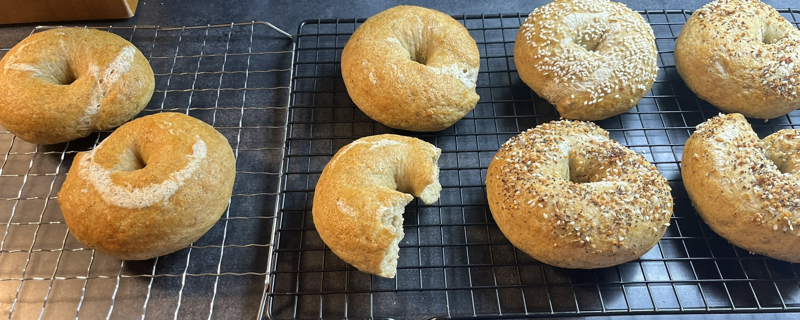

Gluten Free Bagels

Description
These bagels are soft, chewy, and taste almost like the real thing!
They freeze well and are good for sandwiches. Recipe credit to
The Loopy Whisk.
Ingredients
- 30g (6 tbsp) whole psyllium husk (If using psyllium husk powder, use only 25g)
- 540g (2 and 1/4 cups) lukewarm water
- 220g (1 and 3/4 cups + 2 and 1/2 tbsp) tapioca starch
- 220g (1 and 1/2 cups + 2 tbsp) millet flour, plus extra for flouring the surface
- 80g (1/2 cup + 2 tbsp) sorghum flour
- 20g (1 and 1/2 tbsp) caster/superfine or granulated sugar
- 12g (2 tsp) salt
- 8g (2 and 1/2 tsp) instant yeast (If using active dry yeast, use 10g)
- 20g (1 and 1/2 tbsp) olive oil or other neutral-tasting oil
You'll also need:
- 2-3 tbsp molasses
- 1 US large egg, whisked
- 2-3 tbsp sesame seeds, poppy seeds, everything bagel seasoning, or other toppings of choice
Steps
Oven setup and preheating:
- If you can fit all 8 bagels onto a single, large baking sheet: Adjust the oven rack to the middle position and line a large baking tray with parchment paper.
- If you need to bake two trays at once (smaller oven): Adjust one oven rack to the middle position and the other to the lowest position. Line two baking trays with parchment paper.
- Preheat the oven to 450°F.
Making the dough:
- You can prepare the dough in a stand mixer fitted with a dough hook or by hand.
- Make the psyllium gel: In a bowl, mix together the psyllium husk and warm water. After about 30-45 seconds, a gel will form.
- In a large bowl or the bowl of a stand mixer (if using), whisk together the tapioca starch, millet flour, sorghum flour, sugar, salt, and yeast. (If using active dry yeast, it must be activated first)
- Add the oil to the psyllium gel, and mix well to combine.
- Make a well in the middle of the dry ingredients and add the psyllium-oil mixture.
- Knead the dough until it's smooth and all the ingredients are evenly incorporated. The final dough should be smooth, supple, and quite firm, with no unmixed lumps. It should come away from the sides of the bowl and shouldn't be sticky to the touch.
Shaping the bagels:
- Sprinkle the working surface with millet flour if needed.
- Turn out the dough onto your work surface, give it a gentle knead, shape it into a ball, and divide it into 8 equal portions. Each portion should weight about 142g.
- Flatten a portion of dough into a small rectangle or oval (the exact dimenstions don't matter). Working along the wider end, fold the dough over itself and press down gently to seal. Continue this process so that you're essentially rolling it up into a small log.
- Use the palms of your hands to roll the dough back and forth until you get a roughly 10-inch rope of equal thickness all the way across.
- If needed, wet the ends of the rope slightly to make them slightly tacky. Overlap the ends by about 1 inch and gently press them together. Put two or three fingers through the hole in the center and use them to roll the dough back and forth where the ends overlap to seal them.
- Transfer the shaped bagels onto a lightly floured baking sheet, making sure to space them apart.
Proofing:
- Lightly cover the bagels with a sheet of plastic wrap and proof them for 30-40 minutes, until they're slightly puffed up but not yet doubled in size. Ideally, place them in a warm (not hot!) spot on the kitchen counter.
Boiling the bagels:
- Fill a large, wide pot with water and mix in the molasses. The water should be at least 2 and 1/2 inches deep.
- Bring the water to a boil, then reduce the heat to medium-high.
- Drop in the proofed bagels, 2-4 at a time depending on the size of your pot. Make sure they have enough space to float around.
- Boil the bagels for 30-45 seconds on the first side, then flip them over and boil on the other side for another 30-45 seconds.
- Remove the bagels from the boiling water and place them on a wire rack placed over a baking sheet to drain for a minute or two.
- Transfer the bagels to a lined baking sheet. Brush them with the egg wash and sprinkle generously with toppings of choice.
Baking the bagels:
- If you can fit the bagels on a single baking sheet: Place the bagels in the oven on the middle rack. Immediately reduce the oven temperature from 450° to 400°. Bake for about 26-30 minutes, until the bagels are deep golden brown.
- If you need to bake two trays at once: Place one baking sheet on the middle oven rack and the other on the lowest rack. Immediately reduce the oven temperature from 450° to 400°. Bake for about 13-14 minutes, until the top bagels are light golden. Then, swap the two trays for an additional 16-17 minutes (about 30 minutes total). If needed, you can swap the trays again for the last minute or two.
- Once baked, transfer the bagels to a wire rack to cool at least until warm.
Return to home